Sourcing
By hand
The leaves and cherries engraved on our cup are not decoration. Every cherry is picked by hand, one at a time, because a machine cannot tell which ones are ready.
Handpicked, roasted on premise, ground to order.
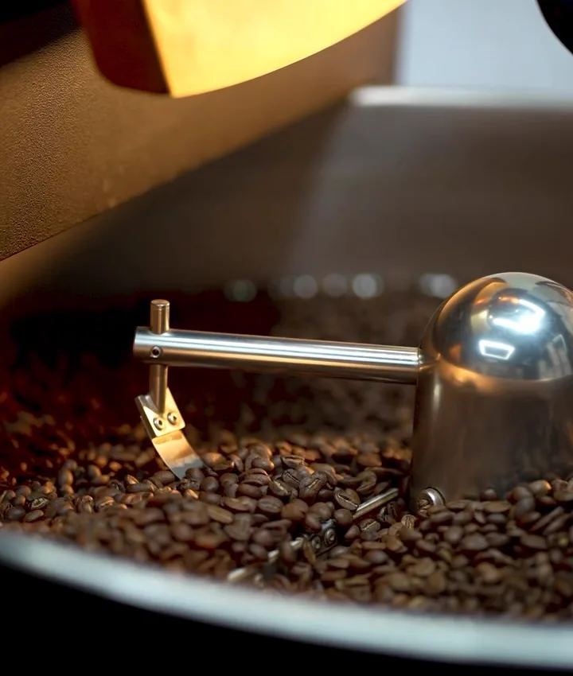
Two of the three words on our door happen before anyone orders anything. This is that part.
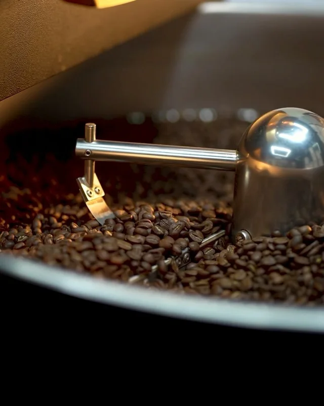
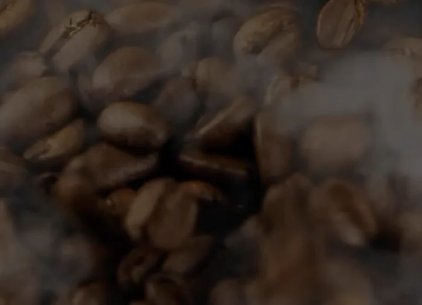
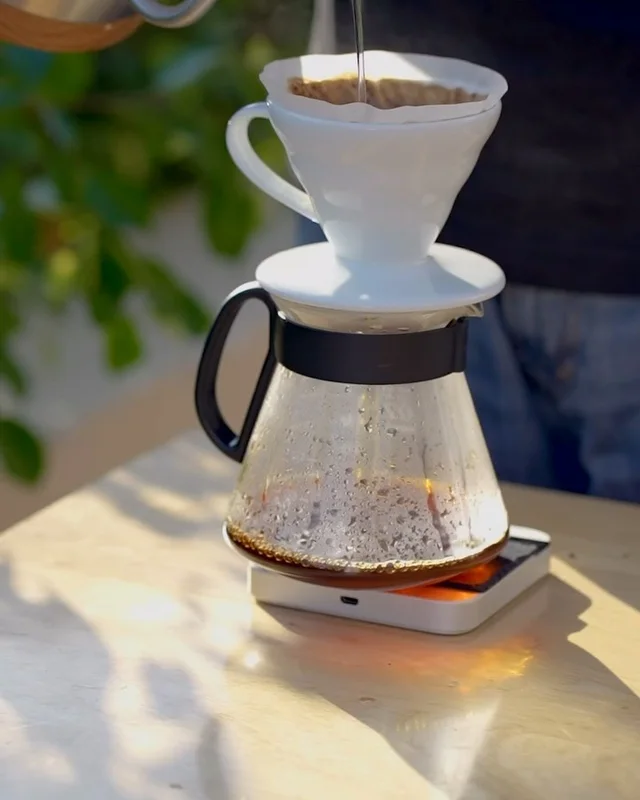
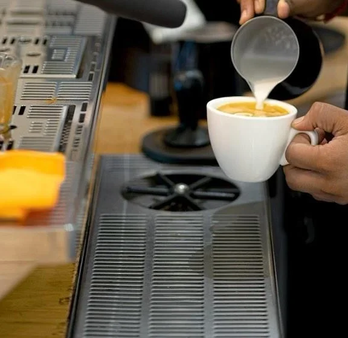
By hand
The leaves and cherries engraved on our cup are not decoration. Every cherry is picked by hand, one at a time, because a machine cannot tell which ones are ready.
On premise
We roast in the same building you drink in. Small batches, tasted before any of it reaches the counter.
Ground to order
Never ground before you ask for it, then pulled on the La Marzocco at the bar.
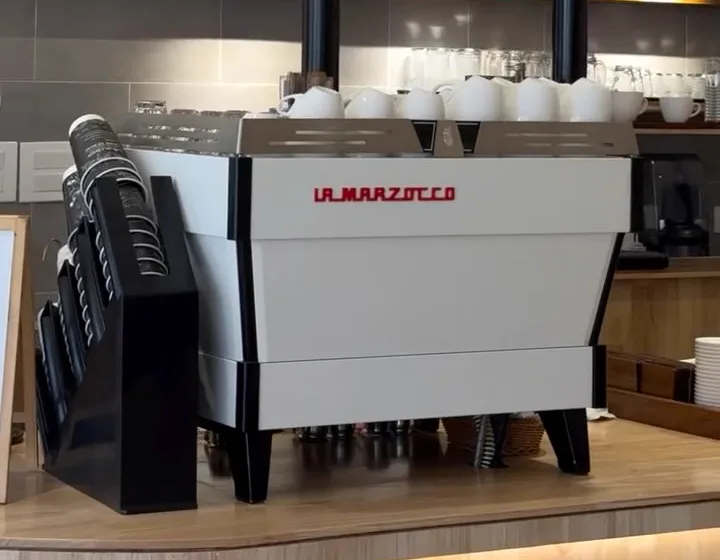
Gur, not sugar. It behaves differently in milk, and it tastes like something rather than just sweet.
The one you actually grew up on, pulled on an espresso machine instead of boiled to death.
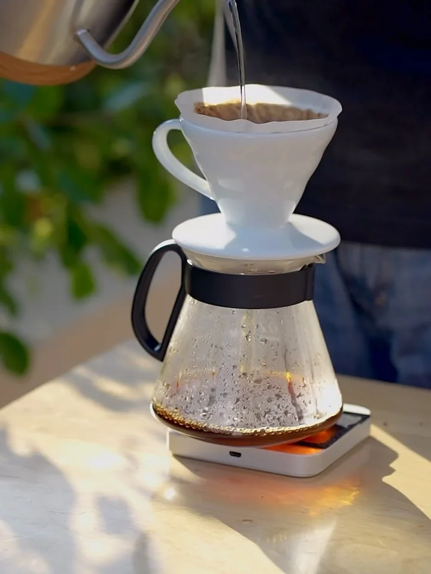
Poured by hand, in circles, over a paper filter.
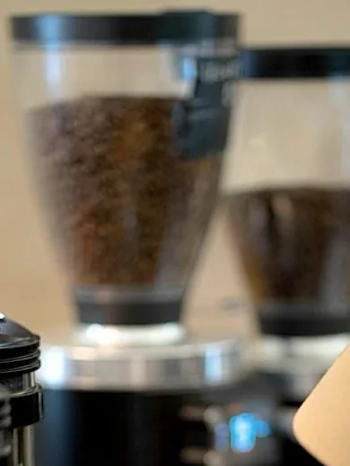
A flat bed, so the water meets every ground evenly.
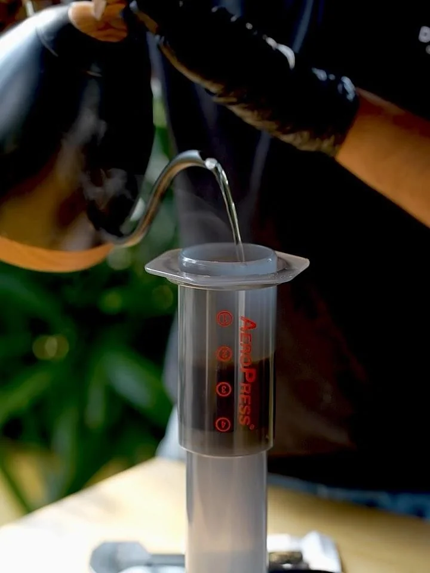
Pressed through, quick and clean.
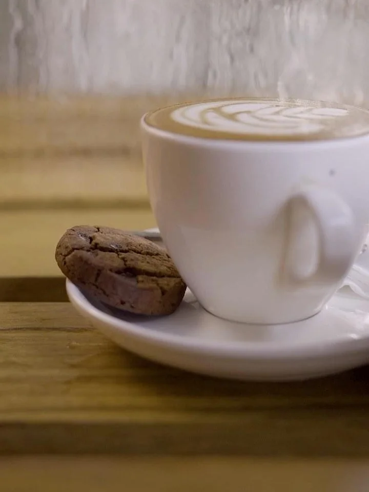
Steeped whole, then plunged.
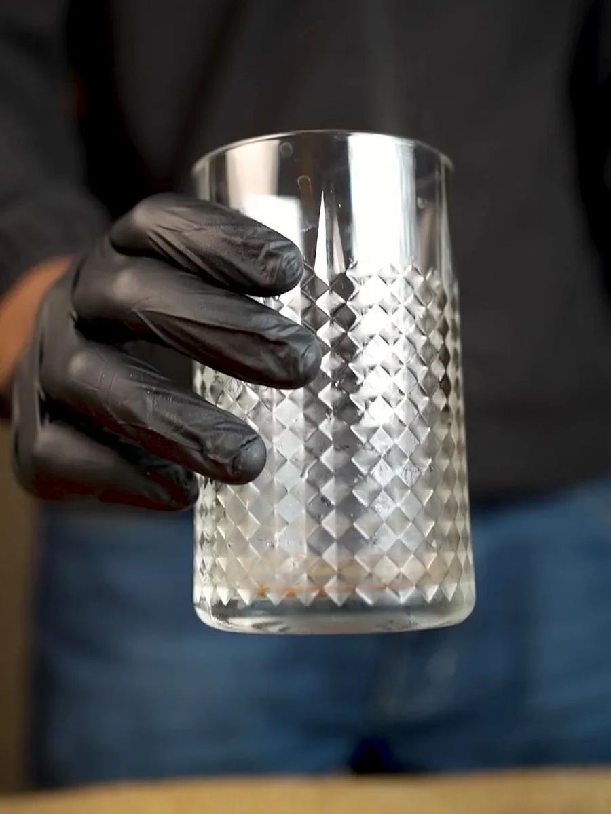
Coarse ground and steeped for twenty four hours.